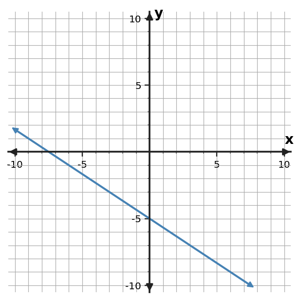

1. Relationship A is $y=4x-2$. Relationship B is shown in the table. Compare their rates of change and starting values.
| $x$ | B: $y$ |
|---|---|
| $0$ | $6$ |
| $2$ | $8$ |
| $4$ | $10$ |
1. Relationship A is $y=4x-2$. Relationship B is shown in the table. Compare their rates of change and starting values.
| $x$ | B: $y$ |
|---|---|
| $0$ | $6$ |
| $2$ | $8$ |
| $4$ | $10$ |
2. Relationship A is $y=-x+5$. Relationship B is shown in the table. Compare their rates of change and starting values.
| $x$ | B: $y$ |
|---|---|
| $0$ | $-4$ |
| $2$ | $2$ |
| $4$ | $8$ |
3. Relationship A is $y=2x+7$. Relationship B is shown in the table. Compare their rates of change and starting values.
| $x$ | B: $y$ |
|---|---|
| $0$ | $3$ |
| $2$ | $-1$ |
| $4$ | $-5$ |
4. The graphed line is Relationship A. Relationship C is $y=\frac{1}{2}x+4$. Which has the greater rate of change? Compare their starting values as well.

5. The graphed line is Relationship A. Relationship C is $y=2x+1$. Which has the greater rate of change? Compare their starting values as well.

6. The graphed line is Relationship A. Relationship C is $y=-x+3$. Which has the greater rate of change? Compare their starting values as well.

7. Compare the two linear relationships. Use rate and starting value rather than one displayed output.
| A: $x$ | A: $y$ |
|---|---|
| $0$ | $-3$ |
| $2$ | $1$ |
| $4$ | $5$ |
| B: $x$ | B: $y$ |
|---|---|
| $0$ | $8$ |
| $3$ | $5$ |
| $6$ | $2$ |
8. Compare the two linear relationships. Use rate and starting value rather than one displayed output.
| A: $x$ | A: $y$ |
|---|---|
| $0$ | $10$ |
| $2$ | $6$ |
| $4$ | $2$ |
| B: $x$ | B: $y$ |
|---|---|
| $0$ | $1$ |
| $3$ | $10$ |
| $6$ | $19$ |
9. Compare the two linear relationships. Use rate and starting value rather than one displayed output.
| A: $x$ | A: $y$ |
|---|---|
| $0$ | $4$ |
| $2$ | $6$ |
| $4$ | $8$ |
| B: $x$ | B: $y$ |
|---|---|
| $0$ | $-5$ |
| $3$ | $1$ |
| $6$ | $7$ |
10. Plan A charges 12 dollars plus 5 dollars per visit. Plan B charges 24 dollars plus 3 dollars per visit. Compare the rates and starting values. Which feature answers “changes faster,” and which answers “starts larger”?
11. Account A starts at 40 dollars and gains 9 dollars per week. Account B starts at 70 dollars and gains 6 dollars per week. Compare the rates and starting values. Which feature answers “changes faster,” and which answers “starts larger”?
12. Tank A starts with 90 liters and drains 4 liters per minute. Tank B starts with 60 liters and drains 2 liters per minute. Compare the rates and starting values. Which feature answers “changes faster,” and which answers “starts larger”?
13. Line A has slope 4 and $y$-intercept -2. Line B has slope 4 and $y$-intercept 5. Devon says the lines represent the same relationship because their slopes match. Assess the claim.
14. At $x=1$, Relationship A has a greater output than Relationship B. Morgan says A must have the greater slope. Explain why that conclusion does not follow.
15. Two graphs use different axis scales. The line that looks steeper is declared to have the greater slope. Assess the reasoning.
16. For Relationship A, $y=4x-8$, and Relationship B, $y=x+13$, find the input where their outputs are equal and identify which relationship has the greater rate of change.
17. For Relationship A, $y=x+19$, and Relationship B, $y=5x+3$, find the input where their outputs are equal and identify which relationship has the greater rate of change.
18. For Relationship A, $y=-x+32$, and Relationship B, $y=2x+14$, find the input where their outputs are equal and identify which relationship has the greater rate of change.
19. A relationship is represented by $y=-2x+7$. Identify its function family and give one feature that supports your choice.
20. A relationship is represented by $y=(x-1)^2$. Identify its function family and give one feature that supports your choice.
21. A relationship is represented by $y=3^x$. Identify its function family and give one feature that supports your choice.
22. Using rate and starting value, compare Relationship A, $y=3x-2$, with Relationship B, $y=x+9$, and state one conclusion supported by those two models.
23. Using rate and starting value, compare Relationship A, $y=-x+7$, with Relationship B, $y=2x-4$, and state one conclusion supported by those two models.
24. Using rate and starting value, compare Relationship A, $y=x+4$, with Relationship B, $y=-2x+10$, and state one conclusion supported by those two models.